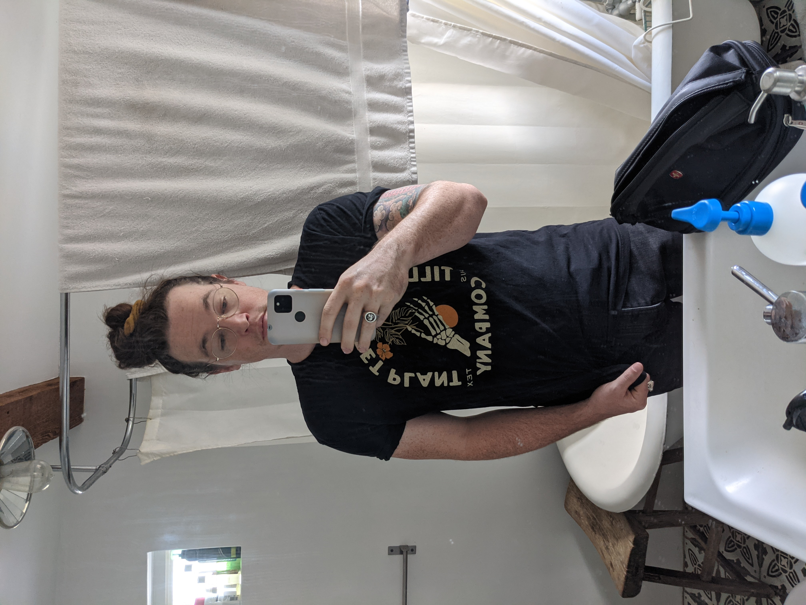
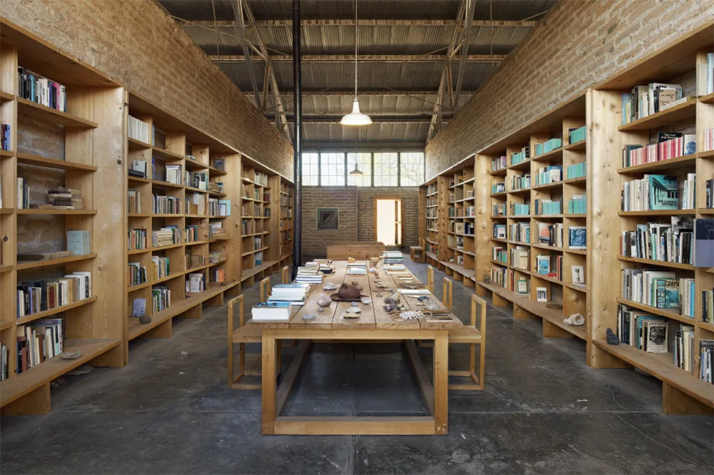

big bend trip
Family vacations, planning
We used to go on family vacations every other year or so. Often, those vacations were very high stress - our family was large, and navigating the world with 5 kids + whatever family we visited was just tough. We've never really gone on a family vacation now that we're all adults.
I've tried specifically, a few times, to get some sort of vacation tradition started, but nothing has stuck. I miss Life Experiences with my family, and I hope that one day we do that sort of thing with regularity. There's this adage I like that talks about how love isn't anything special, its mostly a function of just being around someone regularly, and I want to love my family. It is hard to see everyone as often as I'd like, and shared vacations would put a bound on our friendships degrading.
Finally planning
In 2021, my elder brother Micah and I decided it was really important for us to do something with the year, something we'd be proud of and glad to have done after it was over. 2020 was a rough year for everyone of course, and we wanted to make sure that 2021 didn't end up looking just the same as its predecessor.
We talked off and on for most of the year about going on a trip together and where we might go. It didn't become a reality until October sometime, when we actually started requesting PTO and looking at destinations.
We decided relatively early on that we'd like to camp.
we camped a lot as kids, though I'm not sure either of us actually enjoyed most of those camping trips! we figured we'd try again as adults who could self direct a bit more.
We looked at availability for several national parks, including the grand canyon and big bend national park, but with such short notice there was nothing available. My partner L had worked a few interpreting jobs at Big Bend Ranch state park, and recommended we check it out. She warned us that it was more remote than the national park, but it did have availability, so we booked a 3 day stay there. We each took a week off, so we booked another 3 day stay in Marfa after our big bend trip was over; the idea was we'd camp pretty remote / without amenities, then go stay in a nice AirBNB and have nice food every day.
Packing
Since this was actually two trips in one it was really hard to figure out what to bring! we both brought so much bullshit lmao. The absolute best things we brought were our two bikes and 3 different water storage things. As a reaction to the shit show that was the February winter storm in Texas, Micah had started preparing some basics like potable water storage to prepare for further grid failure. He bought 2 10 liter jugs, and this trip was their trial run. I purchased a collapsible 2.5 gallon water jug.
We ended up using the 2.5 gallon jug as our primary water source, filling it from the 10 liter ones when it ran out.
We eventually totally filled the car. I've never packed a car so thoroughly before! Both of us bought a bunch of bullshit from REI, we prepped as well as we could. I bought two new car tires, got a rotation and an alignment. The day before we left both of us are still packing, trying to get all out shit together.
The way there
Austin -> Alpine
That first day of traveling was really nice - I said goodbye to L, drove to Micah's, loaded up his shit, and said goodbye to A. I drove us through Fredricksburg, where we stopped and had lunch at a diner that was Pretty Alright. We made it to the halfway mark where I swapped with Micah at a gas station. I neglected to fill up on gas there, and we almost didn't make it to the next gas station. Got there running on fumes:

Despite my poor judgment, we eventually me made it to Alpine, where we had an AirBNB for a night so we could head into BBR with a bit more daylight. We got to the place, unloaded our shit, and walked to find food. We ate a decent dinner at a bad restaurant; no beer, bad service, right on the main road. Pretty good food. The menu was standard Mexican fare, with some sea food additions that we avoided.
Alpine is very far from water!
We walked back to the AirBNB, stopping at a liquor store to stock up on whiskey and beer for Big Bend, and we sat together in the AirBNB drinking and cracking jokes. I can't remember what he said that really got me, but early on I got hiccups from some joke he made and I never recovered the rest of the night.
Alpine to bbr, bbr day 1
The next day we loaded up, got in the car, and as soon as I started driving the car started pulling, I mean bad. Not an auspicious start to the day. Micah mentioned that it was pulling for him the evening before, but this seemed much worse. We went to a gas station and air up all the tires to see if we have a level problem. That helped some, but it still pulled real fucking hard. We called every mechanic within driving distance, but it was Sunday and these towns are small so no one was open. We eventually decided to soldier on to BBR, knowing that we might lose a day to car trouble / getting towed, which felt better than DEFINITELY losing a day to car trouble / waiting for a shop to open.
From alpine we headed to Presidio, the nearest town to BBR state park. Its not very far, about an hour and a half. Presidio to BBR is ALSO not very far, just like 30 miles to the entrance of the park, but after that you've another 27 miles to go over the most unmaintained road I've ever had the displeasure of driving my little civic on. I am surprised they even allow 2WD vehicles on this road. It took us hours, and it took at least half that time for me to get comfortable driving off-road. We stopped once at an overlook, just above a little desert valley. It was the first time we'd exited the car since presidio and it was utterly silent. I have lived in a city my whole life, and though I've camped a bit as a child I don't really remember much of it. This level of silence was astonishing.


Eventually we made it to the ranger station, a place with power / wifi in air quotes, and a little store where you could buy a few things if you forgot them (or didn't realize you needed them): some blankets, headlamps, coffee cups, trail food, etc. We checked in, got some guidance on what trails to check out, then headed out to our drive up campsite. We stayed in South Leyva Campground, a collection of campgrounds that were all empty. We were so surprised! we had the whole place to ourselves for the duration of our stay.
We asked why the park seemed so empty on our way out on Wednesday, and the lady at the ranger station blinked and said "this is the busiest we've been in months."
We made camp, for the first time as adults, pitching tents and blowing up sleeping pads and trying to figure out what the fuck the instructions were telling us to do. We settled in and made a fire to cook dinner: bacon grilled cheese sandwiches and potato soup. I think it was the best meal we had all week, we toasted the bread in the bacon grease and i almost died at how good it was.
We sat at the fire as the sun set and the moon rose. that first night was a few days before full moon, and we could see everything by the light of the moon. We were a little bummed we couldn't see the milky way; supposedly you can see it in BBR since its part of the national dark sky project, but seeing the desert by full moonlight was also incredible. pictures just don't capture any of the magic.

In big bend ranch
Day 2 in BBR and The Big Mistake
We started the day at a fairly normal time, between 7 and 8, but it took a long while for us to really get going. We made coffee in a French press by boiling potable water in the one cooking dish I brought, a dutch oven. We made a breakfast of eggs and bacon in the same dish, then cleaned up and ran from heroically fought large mean wasps who were interested in our bacon grease. Finally, around 10 or 10:30 we got on bikes and rode to the ranger station to get some advice.
Readers who have been to the desert before might notice that this is a bit late in the day to get started. This sets the tone for how the rest of our day went!
The route to the ranger station was ~1 mile from our camp ground but by the time we got there we were a bit out of breath – we traveled back to the station via the same road we drove in on, a road in name only, and via bike we felt every bump and dune. The ranger at the station gave us some maps, we picked a route, and set off again on our steeds. We stopped and site saw(? I suppose??) along the way:


Before this account goes any further its worth pointing out: we are big idiots! We made a lot of mistakes that could have been Very Bad and thankfully we only got medium dehydrated lol
Because we are bad planners and didn't think too much about what we were doing, we had to go back the direction we came and then some just to get to the road that gets to the trailhead. We rode (bumped, really) through a vague path for 3 miles before finally hitting the trailhead. Just as we made it to the trail head I ran out of water, though my brother still had half his Nalgene left. The maps the ranger gave us showed that the trail was only 2 miles long or so; we figured 40 minutes, maybe an hour, make it to the end, then we head back sharing the remaining water.
Do not do this lol
We continued on with our bikes on the trail and that was such a cool experience; neither of us had ever done trail riding before, and taking bikes up and down draws, jumping edges, and trying to just Stay On the Bike was so much fun. We drank more of the water as time goes on, and eventually we ran out. I told Micah I was really nervous and wanting to head back, but he persuaded me that we were almost at the end and we would be upset if we didn't finish the trail! We give it another 10 minutes (10 minutes which felt like an eternity) before I dig my heels in and we actually head back.
The ride back down was rough; we were both exhausted, and it was well past 1 PM at this point. The sun was beating down on us. We re-applied sun screen during a breather but what we really wished we had was water. The sand, fun and challenging on the way in, was a mire on the way out. When we finally made it to the trail head we rested in the shade of the compostable toilet building and dreaded the upcoming ride to camp.
If the ride on the trail was rough, the ride to camp was excruciating. Neither of us had anything to drink for over an hour, and it was well past the time we would normally have eaten lunch. We were both shaky and slow, trying our best to stay on our bikes whenever the road turns from sharp rocks to loose sand, both of us quite aware that we really erred getting to this point.
Finally, a bit short of 3 PM, I saw the turn off to our campsite. We turned in, went down the hill, and stumbled off the bikes to get water and food. We both sat there, mostly silent, filling our bottles from the main jugs we brought in and eating a mix of sugar foods and whatever we could find that didn't require cooking. The first words we said to each other are about how there was a while there we thought we might have needed SAR.


We did nothing else the whole day, really. We cooked dinner but I couldn't tell you what we made. I recall it being good, but not as good as the grilled cheese from the night before. We stomped around the camp looking at it in day light. We went to bed early. I slept.
Day 3 in bbr
We started the day I think even slower than the day before. We felt surprisingly able and refreshed, but I think maybe we were hesitant to get the day started, savoring the rest in memory of the exhausting afternoon before. We made coffee. we made breakfast, eggs and bacon again. We talked about what we were gonna do that day - ultimately, we decided to avenge ourselves on the trailhead. I was bummed that meant seeing some of the same sights we saw the day before, but agreed it would feel gratifying to conquer the route that nearly killed us.
it's especially fun/painful to note that: this was the shortest, tamest route in the park! We are not good at this.
This time, however, we were gonna do things right. We filled our water bottles from the main water jugs, then we filled my 2.5gal container of water and tucked that in my saddlebag. Our plan was to lug it all right to the trailhead, leave the bikes and the large 2.5gal of water there, fill up, and go through the trail on foot. We rode off sometime between 10:30 and 11 and made good time. Both of us had become much more proficient at riding through the terrain.
The biggest thing I learned is that, when approaching a stretch of loose sand, you can build up some speed and keep you front wheel perfectly straight and you're much less likely to get derailed or have to walk. The peddling motion rocks your wheel from side to side and hurts your ability to stay on the bike.
At the trailhead we followed the plan – we filled up our water bottles and left everything by the compostable toilets. We walked instead of riding, which was absolutely the right choice – the route was much easier on foot. We eventually made it to where we turned back the day before and pressed on, excited, thinking we were close to the end. We absolutely were NOT, we were maybe a 3rd of the way there! The rest of the route was down and up, back down and back up two gorges. It was beautiful and isolated; the last gorge we go down into is full of truly green vegetation thriving in the shadow of the rock walls.

We finally, exhausted, climbed the ridge to the very end of the trail and peered out over a gorgeous vista: a canyon, as wide as you can see and an opposite side far in the distance.


We sat and (sparingly) drank water before we headed back down the ridge to eat snacks in the shade. We started heading back after about 20 minutes of rest. On the way back to our bikes we met several different hiking parties, all of them as surprised as we were during our hike out to find that they were, in fact, no where near the end of the trail. I ran out of water before we made it back to the bikes, though Micah still had some so we shared from his. I vowed to buy a 32oz nalgene.
Other than playing footsy with some incredibly annoying wasps, we refilled our water and started back to camp without incident. The sand and rock was again much more difficult on the way home, but it was incredibly satisfying to have actually finished the fucking thing. We arrived at camp and sat and read for a while, before eventually making dinner. We even hiked around our campsite that night, going up to the ridge line in the moonlight and stomping around. The desert is lovely at night, even if it was cloudy.


transition day: leaving the park, arriving in marfa
The final day was both a bit of a relief (I was VERY dirty) and a bit sad; we only got to do a single route in the desert due to our complete mishandling of day 1. We sat and had breakfast and coffee again before starting to pack up. Again, we fought strenuous battles versus intruding wasp knights hungry for whatever was in our trash bags.
Once we finished packing we started the trek out of the park. Leaving was somehow a bigger adventure than coming in; on the way in there are these long downhill stretches that I didn't worry about much. On the way out I couldn't crawl up them at normal speeds, my tires would just get stuck. Instead I had to get up to Ramming Speed ahead of the incline, keep the wheels pointed straight ahead, and Just Go until the car crested the hill. We learned this the hard way after I got the car stuck by going too slow up a hill at one point!
Once we made it out of the park and back on paved roads the car started to noticeably pull at higher speeds. We drive the ~15 or 20 minutes to presidio and looked all over for an alignment shop. We checked three stores, but they all said no one would do alignments on the US side of the border. God what a pain. Micah and I talked it over and decide to just continue the drive to Marfa.
Infuriatingly, I was unable to get the car seen in Marfa or the surrounding towns at all. I talked to 10 different car shops, who all out sourced their alignment shop to a particular place that was booked ~5 days out! I am not used to small town turnaround times, I guess.
We stayed in a very cute whole home airbnb. I loved some of the things they had done with it, hated some of their decor. My favorite thing by far was this cool wall of books they built:

We spent the afternoon relaxing, showering, doing laundry, and generally being clean.
Before:

After: 
We ended the day with a tourist-y thing and dinner. We went to this weird moon ritual thing as part of the full moon? It was….the kind of thing you would be really impressed with your FRIEND for building, but not what you would consider objectively cool or even artistic, if that makes sense?
We got dinner at the only place in town still open, in the restaurant of a hotel on main street. it was really good food. micah ordered a drink "A bullet for the general". He said you have to order it by saying "i'll take a bullet for the general". The picture is from a different meal we had, but just trust me, he was making this same face while he ordered.

marfa and the way home
We had a list of activities we wanted to check out in Marfa, but by the end of day 2 we had really hit the highlights. We spent a lot of time just hanging out inside together, which was really nice.
marfa day 2
We biked to the Donald Judd museum which was VERY cool. This guy built a compound in which to create art and included details and variables from his compound in the work he produced. I loved the details about how he planned this symmetrical work space and how it grew over time with his fortune, about how the wall all the way around was a precise height, which enabled specific window placement to maximize light but minimize glare, all that stuff was dope. The house that he lived in with his kids was really lovely (and also a safety violation, these huge stares with no railings lmao). I would've taken pictures but the fucking foundation doesn't allow you to take photos and is real nasty about it. All pics of the art are from The Internet.


We also checked out some other museums in Marfa but saw nothing particularly cool. We biked around town for a bit; we sat at the airbnb, playing metroid dread together; we got dinner at the Water Stop which was just across the street from our place - good food, very cute.
Oh, and of course, this photo:

marfa day 3
When planning the trip originally we weren't sure if we'd need this day. We figured maybe we could drive out of Marfa to Balmorhea State Park, an hour or two away. Unfortunately, with my car being less than reliable, we decided to just stay in town and save any potential car karma for the drive home. We biked around town and went to shops, Micah found some gifts for folks, but most of the day we ended up playing Metroid Dread in the airbnb. We ended the night with another nice dinner and drinks.
It may sound weird, but especially playing video games together on the couch was nostalgic for me, and is one of my favorite memories of the trip. When we were young we played a bunch of GameBoy games whenever we traveled (including Metroid Fusion and friends for the GBA), so playing Metroid Dread definitely evoked the same feeling.
the way home
We packed up most things the day before, leaving them just inside the airbnb so that we could just have coffee and load the car with no muss. The trip ended up being uneventful for reasons I still don't understand - the car didn't pull very hard (though still a bit); we just drove and drove the 6 hours or so home.
Because I absolutely loathe taking things to mechanics, I: still have not had my car looked at. Drives just fine still! Just a little pull to the right!
retrospective
Good LORD we should have had a more appropriate vehicle. We really tested the limits of our capability with the civic, and I'm not sure that I could've made it in or out in less ideal conditions. I've done some reading and I think renting a proper vehicle is supposed to be hard; the local rental places do not want you to take their car into those conditions! Some folks report success renting an appropriate car in El Paso and driving it down. Higher clearance needed for sure, but also 4x4 would've opened up new locations in the park to check out.
We should have had more portable water. my 2.5gal thing ended up being super important but was almost not enough; maybe consider a second one for these kind of two person trips. Also definitely get a 32oz nalgene (update: did this one!) instead of my dinky little 16 oz water bottles.
Marfa did not need so much time. Would go again in several years, but the coolest thing to do in the city proper was the dope Donald Judd museum, the rest didn't need much dedicated time. Balmorhea would have been an excellent thing to use the day on :( Its been ages since I've gone. Hopefully next time.
Consider something like a gravel bike for desert riding. My little 90s hardtail had a hard time keeping up.
Go on more trips with brothers in the future. This was great. Life experience we had never had, pushing our limits (and the limits of the tools we had!). Absolutely worth it.
Just the two of us